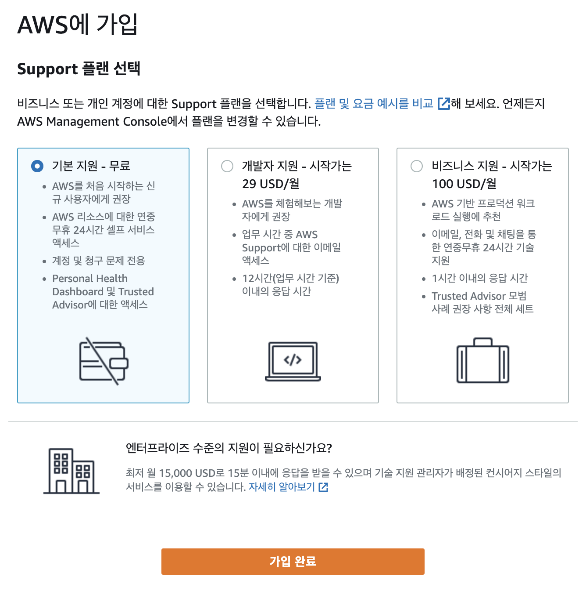
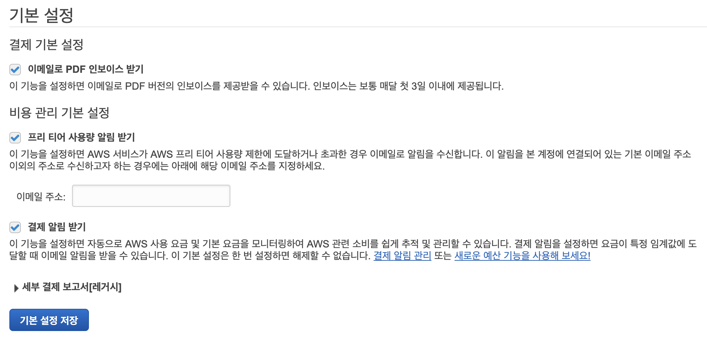
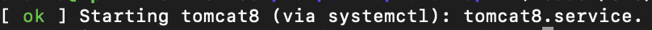
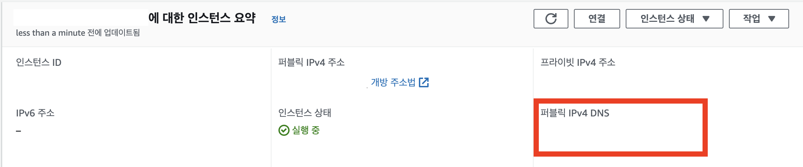
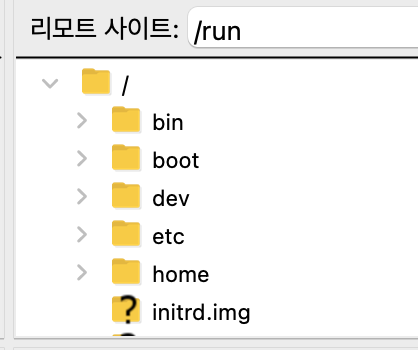

JAVA Servlet 프로젝트) Cafe(웹 사이트) 만들기 30 - AWS로 프로젝트 배포하기 1. war파일 배포
개발환경
- MacBook Air (M1, 2020)
- OpenJDK 8
- Eclipse 2021-12
- tomcat 8.5
- MySQL Workbench 8.0.19
기간
- 2022.3.4 ~ 2022.4.6
주제
- 웹 백엔드 수업 중 중간 과제로 개인 프로젝트를 진행하게 되었다.
- 회원가입/로그인/탈퇴 등 기본적인 회원관리 시스템을 가진 웹 사이트를 만드는 것이다. 주어진 기한은
한 달 - 나는
다음 카페를 소규모로 만들어 보기로 했다. 평소 자주 이용하기도 했고 과제의 평가 기준에서 요구하는 기능들을 다 담고 있기도 했기 때문에 이번 기회에 구현해 보면 그동안 배운 것들을 활용하기에 좋을 거 같았다. - 평가 기준에 사이트의 디자인 구현(HTML/CSS 등 프론트엔드)은 포함되지 않기 때문에 본인이 쓰고 싶은 HTML/CSS 템플릿을 구한 뒤 회원 관리 기능을 구현하면 된다.
진행상황
-
프로젝트 제작 기한이 끝나고 발표도 다 하고 과제물도 다 제출했지만 마지막으로 요즘 대세인
AWS로 배포도 해 보고 싶었다! 그래서 구글링 가이드를 따라가며 하고 있는데 마냥 쉽지는 않군 - https://m.blog.naver.com/scw0531/221438323697
- 전체적인 세팅 방법은 이 블로그 글을 참고했다.
회원가입

AWS가 어떤 것인지 맛보기 용이니까 무료 플랜 선택

-
그리고 재수 없게(?) 과금 경험을 하신 분들이 결제 알림 설정을 꼭 해 놓으라 그래서 알림 설정도 했다.
-
그 후로는 위에 첨부한 블로그 글대로 쭉 따라갔는데 위 글과는 다른 자바 버전을 쓰려고 자바 설치 과정만 좀 다르게 했다.
open jdk11 설치
- https://codechacha.com/ko/ubuntu-install-open-jdk11/
open jdk설치는 이 블로그 글을 참고했다.
Tomcat8 설치 그리고…
- 자바를 설치한 후에 다시 처음에 참고하던 블로그 글로 돌아와서
Tomcat8도 설치하고 잘 따라가고 있었는데 안타깝게도 톰캣을 어떻게 실행하라는 설명이 없었다..(아직 잘 모름…ㅎ) - 그래서 구글링 해 보니까 설치된 폴더로 이동한 후
./startup.sh로 실행을 하는 것이라 해서 해 보았다. 그런데 안 됨 ㅠ.ㅠ

차갑다...
- 암튼 그래서 에러 메시지로 구글링을 하다가 https://rimkongs.tistory.com/241 이 블로그 글을 참고해서 원인을 알 수 있었다.
sudo apt-get방식으로 설치한 톰캣은./startup.sh이걸로 실행할 수 없었다.sudo /etc/init.d/tomcat8 start이걸 써야 했음…

실행 성공!
- 이제 톰캣 서버가 잘 돌아가고 있는지 웹사이트로 접속해 봐야 하는데 원래 참고하고 있던 블로그 글에서 그 주소에 대한 언급 또한 없어서… 처음에 좀 헤멨다. 당췌 어디로 접속해서
It works를 확인하란 것인지…

- 알고 보니
퍼블릭 IPv4 DNS주소의 맨 뒤에:8080을 붙이면 접속할 수 있는 것이었다.

- 접속 안 될까봐 좀 조마조마 했는데 다행히 잘 된다.
FileZilla 설치

-
FileZilla를 설치해야 했는데 이거 또한 클라이언트 설치인지 서버 설치인지 언급되어 있지 않아서 둘 다 깔아봤는데 클라이언트를 설치하는 것이었다. -
근데 새 사이트 관리자를 만들어서 접속에 성공한 것 같은데 나는 또 저분과 다르게 폴더가 쭈루루 뜨지 않는 것이었다. 😟 머선 일이고… 맞게 접속한 거 같긴 한데

- ? 떠 있는 폴더들을 누르니까 하나씩 로드가 되었다.

- 근데
war파일 업로드를 하려니까 권한이 없다면서 업로드가 되지 않았다. - https://threeidiotscoding.tistory.com/14
- 이 글을 참고해서 권한 설정을 해 준 뒤 업로드를 할 수 있었다.
배포된 프로젝트 사이트에 접속하기
war파일이 정상적으로 업로드 되고 프로젝트 폴더도 추출되어서 잘 만들어진 것을 확인했는데 8080으로 접속하면 계속 It works 페이만 뜨는 것이었다. 머선 일이고…2- https://gdtbgl93.tistory.com/m/99 이 글을 참고해서 또 문제를 알았다.
- 8080 뒤에
/프로젝트명을 붙여줘야 했던 것이었다. 글고보니 폴더가 따로 생성이 되는데 넘 당황해서 저기까지 생각을 못 했었네…ㅎ

- 이제 진짜로 접속이 잘 되는 것을 확인했다. 신기해!
- 프로젝트 배포가 잘 되는지만 확인하려고 기본 세팅만 진행했기 때문에
DB연결은 아직 하지 않았다. 내 사이트가 제대로 동작하는지 확인하려면DB연결을 해 봐야 하는데 오늘은 시간이 늦어서 내일 마저 해야겠다.